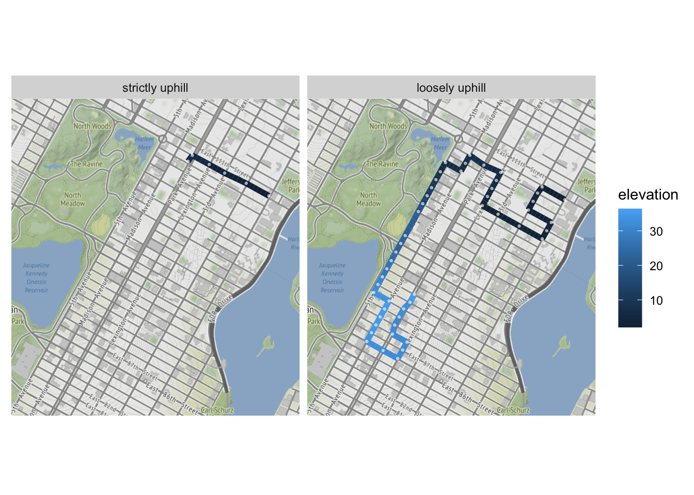

I enjoy going for long walks — and no this isn’t the start of my lonely hearts column. But a herniated disc in my back brought on by too much baseball during my teenage years and not enough stretching (am I really blogging about my high school sports career? Maybe I do need to put up a personal…) makes walking uncomfortable sometimes.
At least that’s the case in one direction. When I’m walking downhill, I’m more likely to feel some pain, but walking uphill is usually not a problem. From what I can gather via my micro medical degree from WebMD University, this phenomenon is caused by the different angles created in my spine as I lean forward or backward to offset the slope of my path. In any case, I find myself seeking out uphill routes when possible during my walks.
Which made me wonder: could I programmatically design entirely uphill routes?
First I need to define a map. In the interest of simplicity – and also nostalgia, as I lived on East 97th St. for three years – I choose the Upper East Side as the site of my experiment. The neighborhood sits on several square miles of uninterrupted grid, which is easier to simulate than some of the more complicated layouts further downtown.
Don’t like/know/care about R? Click here to skip to the results.

First we define our intersections, which are every combination of the streets between 59th and 110th and the seven avenues that stretch from Central Park to the East River (excluding “partial” avenues like York that don’t cover the full sixty blocks):
library(tidyverse)
library(httr)
library(ggmap)
library(data.table)
streets <- 59:110
avenues <- c('5th', 'Madison', 'Park', 'Lexington', '3rd', '2nd', '1st')
intersections <- crossing(st = streets, ave = avenues) %>%
rowwise() %>%
mutate(intersection = paste0("E ", toOrdinal::toOrdinal(st),
" Street & ", ave, " Ave, Manhattan")) %>%
ungroup()Google’s Geocoding API will provide the latitude and longitude for each of our intersections. The only required parameters are an address (the intersection) and an API key which one can sign up for.
geo_requests <- map(intersections$intersection, ~{
# bake in a pause to avoid hitting rate limits
Sys.sleep(0.1)
GET(
url = "https://maps.googleapis.com/maps/api/geocode/json",
query = list(
address = .x,
key = api_key
)
)
}
)
# add lat/long data to intersections dataframe
intersections <- intersections %>%
mutate(lat = map_dbl(geo_requests, ~content(.x)$results[[1]]$geometry$location$lat),
long = map_dbl(geo_requests, ~content(.x)$results[[1]]$geometry$location$lng),
type = map_chr(geo_requests, ~content(.x)$results[[1]]$types[[1]])) %>%
# some intersections don't exist
filter(type == "intersection")The key to the whole exercise, of course, is knowing the elevation of all our locations so that we can determine if I’d actually be going uphill when traveling from one intersection to another. Again, Google steps in with their Elevation API, which can handle multiple locations in a single request:
locations <- intersections %>%
mutate(location = paste0(lat, ",", long)) %>%
pull(location) %>%
paste0(collapse = "|")
elevation_request <- GET(
url = "https://maps.googleapis.com/maps/api/elevation/json",
query = list(
locations = locations,
key = api_key
)
)
# extract elevation data and add dummy column for cross join
intersections <- intersections %>%
mutate(elevation = map_dbl(content(elevation_request)$results, ~.x$elevation)) %>%
rowwise() %>%
mutate(ave_idx = which(ave == avenues),
dummy = TRUE) %>%
ungroup()We define our network as a dataframe of edges, which we compose by cross joining our intersections on itself and then filtering for pairs of intersections that are either a single avenue away or a single street away (i.e. the neighboring four intersections at any point in the grid):
# every possible pair of intersections
all_combos <- intersections %>%
inner_join(intersections, by = 'dummy')
# find closest streets on same ave
# can't simply filter for distance == 1 due to missing intersections
next_street_over <- all_combos %>%
filter(st.x != st.y, ave.x == ave.y) %>%
group_by(idx.x, sign(st.x - st.y)) %>%
filter(abs(st.x - st.y) == min(abs(st.x - st.y)))
# find closest aves on same street
# can't simply filter for distance == 1 due to missing intersections
next_ave_over <- all_combos %>%
filter(ave.x != ave.y, st.x == st.y) %>%
group_by(idx.x, sign(ave_idx.x - ave_idx.y)) %>%
filter(abs(ave_idx.x - ave_idx.y) == min(abs(ave_idx.x - ave_idx.y)))
network <- rbind(next_street_over, next_ave_over) %>%
data.table()And finally we arrive at our workhorse function, find_paths. Given a node (intersection), the function recursively finds available neighbors that are no more than tolerance feet below the current node in terms of elevation. The default value of tolerance = 0 ensures that every segment in a path will be uphill. Additional features of the function are prev, which keeps the path from visiting the same intersection twice, and max_depth, which will truncate a path if it reaches a given depth.
-
replace the
dplyrfunctions withdata.tablefunctions, a crushing blow for a tidy disciple -
limit the
optionsat each intersection to the two best, instead of 3-4
find_paths <- function(node, prev = integer(0), depth = 0, max_depth = 50, tolerance = 0){
# find current elevation
elevation <- intersections$elevation[which(intersections$idx==node)]
# find best two permissible neighbors to travel to
options <- network[idx.x == node & !idx.y %in% prev & elevation.y - elevation.x > tolerance]
options <- options[order(desc(elevation.y))]
options <- options$idx.y
if(length(options) > 2) options <- options[1:2]
# escape recursion if path is stuck or max depth hit
if(length(options) == 0 | depth == max_depth){
return(list(elevation = elevation))
}
return(list(elevation = elevation,
options = map(options, ~find_paths(.x,
# add options to previously visited nodes
prev = c(prev, options),
# increment depth
depth = depth + 1,
max_depth = max_depth,
tolerance = tolerance)) %>%
# make names non-numeric
set_names(paste0("i", options)))
)
}We start at the northeast corner of our grid at First Avenue and 110th Street, which also happens to be the second-lowest intersection in our network at an elevation of only 2.1 feet. Under a strict regime that requires each sequential intersection to be at a higher elevation, my path only lasts about 5 blocks and reaches a height of 7.8 feet.
start <- which(intersections$intersection == "E 110th Street & 1st Ave, Manhattan")
strict_paths <- find_paths(start, tolerance = 0)
strict_paths_df <- data.frame(
elevation = unname(unlist(strict_paths)),
path = names(unlist(strict_paths)),
length = str_count(names(unlist(strict_paths)), "\\d+")
)
best_strict_path <- strict_paths_df %>%
arrange(desc(length), desc(elevation)) %>%
slice(1) %>%
pull(path) %>%
str_extract_all("\\d+") %>%
unlist() %>%
as.numeric()
best_strict_path_df <- intersections %>%
slice(c(start, best_strict_path))
best_strict_path_df %>%
select(intersection, elevation) %>%
knitr::kable()| intersection | elevation |
|---|---|
| E 110th Street & 1st Ave, Manhattan | 2.096720 |
| E 110th Street & 2nd Ave, Manhattan | 3.117095 |
| E 110th Street & 3rd Ave, Manhattan | 3.637582 |
| E 110th Street & Lexington Ave, Manhattan | 5.667128 |
| E 110th Street & Park Ave, Manhattan | 6.845007 |
| E 109th Street & Park Ave, Manhattan | 7.833213 |
Let’s try loosening the constraints. By setting tolerance = -1, we allow the path to decrease elevation by as much as a foot between blocks in creating a route. As you can see by the lengthy dataframe, this approach allows the route to continue for 50 blocks (and perhaps more if we didn’t hit max_depth) and reach the global peak of 36.4 feet at 93rd St. and Park Avenue:
loose_paths <- find_paths(start, tolerance = -1)
items <- unlist(loose_paths)
loose_paths_df <- data.frame(
elevation = unname(items),
path = names(items),
length = str_count(names(items), "\\d+")
)
best_loose_path <- loose_paths_df %>%
arrange(desc(length), desc(elevation)) %>%
slice(1) %>%
pull(path) %>%
str_extract_all("\\d+") %>%
unlist() %>%
as.numeric()
best_loose_path_df <- intersections %>%
slice(c(start, best_loose_path))
best_loose_path_df %>%
select(intersection, elevation)| intersection | elevation |
|---|---|
| E 110th Street & 1st Ave, Manhattan | 2.096720 |
| E 110th Street & 2nd Ave, Manhattan | 3.117095 |
| E 109th Street & 2nd Ave, Manhattan | 3.232970 |
| E 108th Street & 2nd Ave, Manhattan | 2.452764 |
| E 107th Street & 2nd Ave, Manhattan | 3.091658 |
| E 107th Street & 1st Ave, Manhattan | 3.144592 |
| E 106th Street & 1st Ave, Manhattan | 2.710831 |
| E 105th Street & 1st Ave, Manhattan | 3.288545 |
| E 105th Street & 2nd Ave, Manhattan | 3.700262 |
| E 105th Street & 3rd Ave, Manhattan | 2.833672 |
| E 105th Street & Lexington Ave, Manhattan | 4.861722 |
| E 106th Street & Lexington Ave, Manhattan | 5.146324 |
| E 107th Street & Lexington Ave, Manhattan | 5.777032 |
| E 108th Street & Lexington Ave, Manhattan | 5.875484 |
| E 109th Street & Lexington Ave, Manhattan | 6.045978 |
| E 109th Street & Park Ave, Manhattan | 7.833213 |
| E 109th Street & Madison Ave, Manhattan | 7.136589 |
| E 108th Street & Madison Ave, Manhattan | 6.614437 |
| E 107th Street & Madison Ave, Manhattan | 6.641176 |
| E 107th Street & 5th Ave, Manhattan | 6.412849 |
| E 106th Street & 5th Ave, Manhattan | 7.970650 |
| E 105th Street & 5th Ave, Manhattan | 10.165221 |
| E 104th Street & 5th Ave, Manhattan | 11.682654 |
| E 103rd Street & 5th Ave, Manhattan | 13.649129 |
| E 102nd Street & 5th Ave, Manhattan | 17.922848 |
| E 101st Street & 5th Ave, Manhattan | 21.406879 |
| E 98th Street & 5th Ave, Manhattan | 22.344194 |
| E 97th Street & 5th Ave, Manhattan | 22.305689 |
| E 96th Street & 5th Ave, Manhattan | 24.677626 |
| E 95th Street & 5th Ave, Manhattan | 26.330078 |
| E 94th Street & 5th Ave, Manhattan | 27.801750 |
| E 93rd Street & 5th Ave, Manhattan | 30.831589 |
| E 92nd Street & 5th Ave, Manhattan | 31.593800 |
| E 91st Street & 5th Ave, Manhattan | 33.306374 |
| E 91st Street & Madison Ave, Manhattan | 35.799683 |
| E 90th Street & Madison Ave, Manhattan | 35.461571 |
| E 89th Street & Madison Ave, Manhattan | 34.924316 |
| E 88th Street & Madison Ave, Manhattan | 34.313847 |
| E 87th Street & Madison Ave, Manhattan | 33.481079 |
| E 86th Street & Madison Ave, Manhattan | 32.650333 |
| E 86th Street & Park Ave, Manhattan | 31.770727 |
| E 86th Street & Lexington Ave, Manhattan | 31.600262 |
| E 87th Street & Lexington Ave, Manhattan | 32.004177 |
| E 88th Street & Lexington Ave, Manhattan | 31.479828 |
| E 88th Street & Park Ave, Manhattan | 31.665833 |
| E 89th Street & Park Ave, Manhattan | 30.947744 |
| E 90th Street & Park Ave, Manhattan | 32.227726 |
| E 91st Street & Park Ave, Manhattan | 32.429150 |
| E 92nd Street & Park Ave, Manhattan | 35.524128 |
| E 93rd Street & Park Ave, Manhattan | 36.371769 |
Graphing the two paths on top of our original map is perhaps a more fitting way to showcase the discrepancy. The strictly uphill route travels west four blocks and then south one before hitting a local max, while the loosely uphill route snakes around the neighborhood for miles:
map <- get_map(c(left = -73.965,
bottom = 40.775,
right = -73.935,
top = 40.8))
two_paths <- rbind(
best_strict_path_df %>% mutate(type = "strictly uphill"),
best_loose_path_df %>% mutate(type = "loosely uphill")
) %>%
group_by(intersection) %>%
# shift overlap so we can see it on map
mutate(lat = case_when(n() == 2 & type == "strictly uphill" ~ lat + 0.00015,
n() == 2 & type == "loosely uphill" ~ lat - 0.00015,
TRUE ~ lat)) %>%
arrange(desc(type)) %>%
mutate(type = factor(type, levels = unique(.$type)))
ggmap(map) +
geom_path(data = two_paths,
aes(x = long, y = lat, col = elevation),
size = 2) +
geom_point(data = two_paths,
aes(x = long, y = lat),
col = "white",
alpha = 0.5,
size = 0.5) +
facet_wrap(~type) +
theme(axis.title = element_blank(),
axis.text = element_blank(),
axis.ticks = element_blank()) What’s the upshot here? From a technical standpoint, this exercise showcases how relaxing a constraint can lead to a satisfactory result, even if we’re no longer strictly staying within the original parameters of a problem. Engineers and developers are forced to make these tradeoffs all the time. It would also qualify as an example of a “greedy” algorithm – i.e. one that makes the best choice at every iteration – failing to find a global maximum. If our theoretical walker were forced to make the most uphill decision at every intersection, he would quickly settle atop a nearby mini peak while missing out on a much higher one.
But I’ve always found some deeper value in this idea as well. When it comes to your goals, whether they be physical or philosophical, personal or professional, it can feel tempting to try to force yourself into always making tangible improvements while avoiding setbacks. But often such unrelenting progress is unlikely or even impossible. Allowing yourself the time and space to do things incorrectly, to wander, to rest – these are the concessions that can unlock better outcomes in the long term. Try relaxing the constraints you impose on yourself, and you might just reach some new heights.